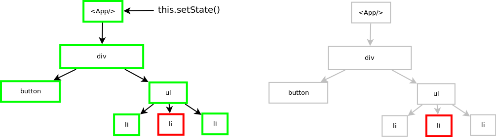

Javascript the darker side of the engine
Kemal Erdem | github.com/burnpiroJS is a weird language
Many implementations
Multiple platforms
Compiled or Interpreted?
It depends...
Main workflow of JS Engine
for (i=0;i<10000;i++) {
if(node.innerText !== value) {
node.innerText = value;
}
}
vs
for (i=0;i<10000;i++) node.innerText;
for (i=0;i<10000;i++) node.innerText = value;
AST (Abstract Syntax Tree)

var a = 42;
var b = 5;
function addA(a,b) {
return a + b;
}
var c = addA(a,b);

Jak uzyskać 60fps?
function doAwesomeThings(timestampId) {
// awesome things
}
window.requestAnimationFrame(doAwesomeThings)
let timeoutId = window.setTimeout(doAwesomeThings, 0)
Dlaczego to takie ważne?
window.cancelAnimationFrame(requestId)
jQuery rewrite
https://github.com/gnarf/jquery-requestAnimationFrame
Twoje style są zbyt skomplikowane
“Roughly 50% of the time used to calculate the computed style for an element is used to match selectors, and the other half of the time is used for constructing the RenderStyle.” - Rune Lillesveen, Opera
.titleContainer
div:nth-last-of-type(3n+1) .titleContainer
Wracamy do przykładu
for (var i = 0; i < paragraphs.length; i++) {
paragraphs[i].style.width = box.offsetWidth + 'px';
}
// Read.
var width = box.offsetWidth;
function resizeAllParagraphsToMatchBlockWidth() {
for (var i = 0; i < paragraphs.length; i++) {
// Now write.
paragraphs[i].style.width = width + 'px';
}
}
Jak React może ci pomóc?
Virtual DOM !== Shadow DOM

Szybki i lekki,
ponad 200tyś elementów na zwykłym laptopie,
Unikanie Reflow,
Stack Reconsiler
ReactDOM.render(
<App />,
document.getElementById('root')
)
- Apple
- Banana
- Peach
<App>
<List>
- Apple
- Banana
- Peach
</List>
</App>
React.createElement(
App,
null,
React.createElement(
"div",
null,
React.createElement(
"button",
null,
"Change Value"
),
React.createElement(
List,
null,
React.createElement(
"ul",
null,
React.createElement(
"li",
null,
"Apple"
),
React.createElement(
"li",
null,
"Banana"
),
React.createElement(
"li",
null,
"Peach"
)
)
)
)
)
Reflow!!!

renderListElements() {
return this.state.list.map(element =>
<li key={element.id}>{element.title}</li>)
}
render () {
return (
{this.renderListElements()}
)
}
Najlepszy algorytm O(N^3)
React O(N)
Reuse
<li key="A">{element.title}</li>
<li key="B">{element.title}</li>
<li key="C">{element.title}</li>
<li key="D">{element.title}</li>
<li key="E">{element.title}</li>
<li key="A">{element.title}</li>
<li key="XYZ">{element.title}</li>
<li key="B">{element.title}</li>
<li key="C">{element.title}</li>
<li key="D">{element.title}</li>
<li key="E">{element.title}</li>
Klucze sa ważne
<li key="A">{element.title}</li>
<li key="B">{element.title}</li>
<li key="C">{element.title}</li>
<li key="D">{element.title}</li>
<li key="E">{element.title}</li>
<li key="1">{element.title}</li>
<li key="2">{element.title}</li>
<li key="3">{element.title}</li>
<li key="4">{element.title}</li>
<li key="5">{element.title}</li>
shouldComponentUpdate()
shouldComponentUpdate(nextProps, nextState) {
return this.state.list !== nextState.list
}
[...]
handleClick() {
this.setState((prevState) => {
let nextState = prevState.list
nextState.push({
id: 'four',
title: 'Orange'
})
return nextState
})
}
this.state.list
[
{
id: 'one',
title: 'Apple'
},
{
id: 'two',
title: 'Banana'
},
{
id: 'three',
title: 'Peach'
}
]
nextState.list
[
{
id: 'one',
title: 'Apple'
},
{
id: 'two',
title: 'Banana'
},
{
id: 'three',
title: 'Peach'
}
]